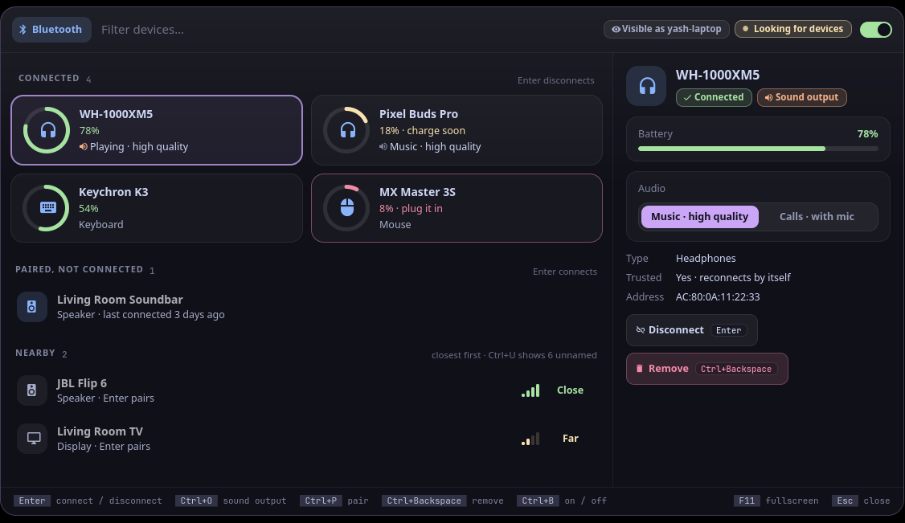
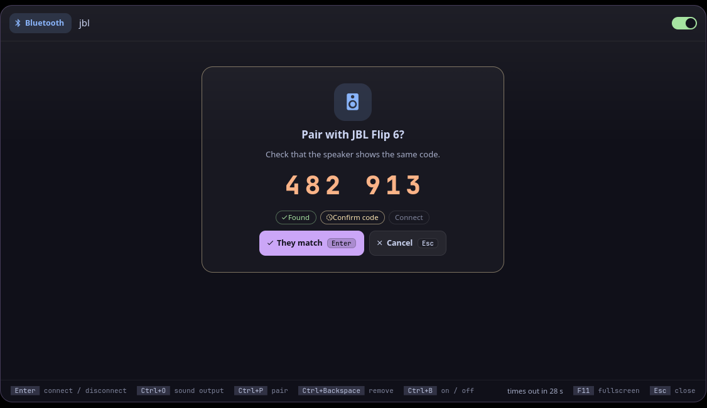

Setu (सेतु) is Sanskrit for "bridge": the bridge between your laptop and your Bluetooth devices.
setu is bluetooth for Vyom: one keyboard-driven panel that opens instantly, with live data, a preview and a key for everything. It runs on any compositor with the layer-shell protocol (sway, Hyprland, river, niri, Wayfire, labwc…). In Vayu, the desktop it was built for, it replaces bluetooth-picker.py.
#Features
- Connected devices are cards, two per row, each with a battery ring: green, yellow under 20% ("charge soon"), red under 10% ("plug it in"). When UPower reports several batteries for one device (earbuds left, right and case), each shows on its own.
- Earbuds: left, right and the case, each on its own (any Google Fast Pair buds: Pixel Buds, OnePlus, Sony, JBL, Nothing…). BlueZ only knows one level for them, but Fast Pair buds announce each bud and the case, with a charging flag, in their Bluetooth LE advertisements. While the panel is open setu runs a quiet LE scan of its own and reads them: three gauges side by side (Left · Right · Case, red at 20% or less, yellow at 40% or less, a green bolt while charging, — when a part didn't say, e.g. in the closed case) and
L 100 · R 90on the card. It only listens: nothing is sent to the buds, and the scan stops when the panel closes. A reading not heard for two minutes says "As of …". The advertiser is matched to the connected device by its name; if two connected devices share a name, setu doesn't guess. - Headphones and speakers say what they're doing: "Playing · high quality" (A2DP) or "Calls · with mic" (HFP/HSP), and which one is the sound output. In the preview, Music / Calls switches between the two (
Space v m/Space v c);Space v omakes the selected one the sound output (throughpactl). - Paired devices that aren't connected say when they were last connected, and "Out of range" when they couldn't be reached.
- Nearby devices, closest first, with signal bars and a word (Close, Near, Far), found while the panel is open (the header says "Looking for devices"). Unnamed beacons hide behind
Space u h. - Pairing is a step of its own: the 6-digit code shown big, to compare with the device, with "They match" (
Enter) or Cancel (Esc), and the steps Found, Confirm code, Connect. A keyboard that wants a code typed gets it shown big too. - Errors say why, in plain words: "Device didn't answer: put it in pairing mode".
- "Visible as
" in the header: the name the other device sees. - Remove asks first (
dd, theny); an on/off switch (Space p p). - Vim keys (Vyom 0.7): NORMAL and INSERT modes, counts,
Spaceas the leader with a which-key strip,?for every key andSpace Spacefor a palette of every action. - No
bluetoothctl, no Bluetooth service, no adapter, or Bluetooth off: the panel says so, and how to fix it. - Keyboard first: every action has a key, shown on its button and in the footer; the mouse works too.
- Never freezes the panel: slow commands run in the background.
#Install
#Requirements
- Vyom 0.7 or newer (Python 3.11+, PyGObject, GTK 4, gtk4-layer-shell, a Nerd Font)
bluetoothctl(BlueZ)- Optional:
pactl(PipeWire's pipewire-pulse, or PulseAudio) for what headphones are doing, Music / Calls and the sound output;upowerfor devices with several batteries
#Install
git clone https://github.com/Theyashsawarkar/setu ~/.local/share/vyom/plugins/setu
vyom reload # pick it up (or log out and in)
vyom setu # open it; run it again to closeGive it a key in your compositor, e.g. sway:
bindsym $mod+<key> exec vyom setu#Update and uninstall
git -C ~/.local/share/vyom/plugins/setu pull && vyom reload # update
rm -rf ~/.local/share/vyom/plugins/setu && vyom reload # uninstall#Usage
Open it with vyom setu (or your key). It opens in NORMAL mode, where every letter is a key and typing changes nothing: j / k move, Enter connects or disconnects, dd removes (it asks), / types a filter (INSERT mode; Esc goes back). Space is the leader: wait a moment after it and a strip shows what comes next. While a pairing runs, only Enter (they match / try again) and Esc (cancel) work.
Vyom's vim keys work too: ? and Space ? list every key, Space Space is the palette, q closes, Esc steps back, Space u f is fullscreen, Space r refreshes, j / k move, gg / G jump, / searches.
Normal mode (where it opens; / types a filter)
| Key | Action |
|---|---|
Enter | Connect or disconnect the selected device (pairs a new one) |
d d | Remove (unpair) the selected device (y confirms) |
r | Rescan for devices now |
Leader (Space)
| Key | Action |
|---|---|
Space p p | Toggle Bluetooth on or off |
Space a a | Start pairing with the selected device, then connect it |
Space a p | Start pairing with the selected device (pair and trust, without connecting) |
Space c c | Connect the selected device |
Space c d | Disconnect the selected device |
Space v o | Set the selected headphones or speaker as the sound output |
Space v m | Switch the selected headphones to music (high quality, no mic) |
Space v c | Switch the selected headphones to calls (with the mic) |
Space u h | Toggle unnamed nearby devices (show or hide them) |
Space y a | Copy the selected device's address |
Space d d | Remove (unpair) the selected device (y confirms) |
While pairing
| Key | Action |
|---|---|
Enter | Confirm the pairing code matches (or try again after an error) |
Esc | Cancel pairing |
Keys that moved in this release still say where they went: Ctrl+Backspace → d d.
#Troubleshooting
- Nothing opens.
vyom listshows every installed tool, and why one is skipped (a missing requirement, or a Vyom that's too old). - It opened, then something failed. Look for a
Tracebackin the daemon's log,journalctl --user -u vyom -u vyom-daemon -b(without systemd:~/.local/state/vyom/daemon.log), and open an issue with it. - Pairing fails with "Device didn't answer". Put the device in pairing mode (often: hold its Bluetooth or power button until a light flashes) and keep it close, then
Enterto try again. - No Music / Calls switch. That needs
pactl(install pipewire-pulse) and an audio device that offers both. - No blur or rounded corners. That's the compositor: on SwayFX, add
layer_effects "vyom" { blur enable; corner_radius 20; shadows enable }.
#The Vyom family
Each tool is its own repository, so you install only the ones you want:
| Tool | What it does | |
|---|---|---|
| dvara | द्वार, gateway | The app launcher |
| ganit | गणित, mathematics | The calculator and converter |
| smriti | स्मृति, memory | Clipboard history |
| bhava | भाव, feeling, emotion | The emoji picker |
| tarang | तरंग, wave | Wi‑Fi and the hotspot |
| setu (this one) | सेतु, bridge | Bluetooth |
| doot | दूत, messenger | Your phone, through KDE Connect |
| patra | पात्र, vessel | Docker containers |
| akashvani | आकाशवाणी, voice from the sky | Notifications |
| raga | राग, melody | YouTube music and video |
| mudra | मुद्रा, gesture | Keybinding search |
| urja | ऊर्जा, energy | The battery at a glance |
| vishram | विश्राम, rest | The power menu |
| kendra | केन्द्र, centre | Quick settings |
#Contributing
Bug reports, ideas and pull requests are welcome: see CONTRIBUTING.md for the development setup and the few rules every tool follows, and CHANGELOG.md for what changed in each release. Please report security issues privately (SECURITY.md).
#License
MIT.